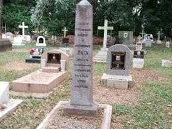

Over sixteen years in Chiang Mai, I have sat with families who had no idea what to do. I have helped coordinate the aftermath when friends passed without warning. I have seen people navigate the system well and I have seen people make it much harder than it needed to be.
The difference almost always came down to one thing: whether anyone had thought about it beforehand. Not a lot. Not obsessively. Just enough to leave a trail for the people who would come after.
This guide is structured the way it should be. Preparation first. Then what happens if the worst arrives. Read it once, do two or three things, then put it away.
What to Have Ready While You Are Still Here
This section takes less than an afternoon. Most people never do it. The ones who do leave the people they love with a manageable situation instead of a crisis.
Your Preparedness Checklist
- Write down your wishes: local cremation in Thailand, or repatriation home. Be specific. Tell at least one person.
- Keep a copy of your passport in a location a trusted person can access without you present
- Write your insurance policy numbers and insurer emergency lines in one document
- Name a next of kin contact with their phone number. Put it somewhere findable.
- Name an executor: a trusted person in Chiang Mai with written authority to manage your immediate affairs. They need to know where your documents are, what your wishes are, and how to reach your insurer.
- If you have Thai assets: get a Thai will drafted. A lawyer charges 3,000 to 10,000 THB. The court process without one costs far more.
- If you have Thai bank accounts: check whether you can add a beneficiary or trusted signatory
- Set up a Power of Attorney for a trusted person here
- Review your home country will. If it has not been updated since moving to Thailand, update it.
- Tell one person where everything is
Under Section 12 of Thailand's National Health Act (2007), you can also document your wishes regarding end-of-life medical care, including whether you want resuscitation or life-prolonging treatment in a terminal situation. This is not widely known among expats. A Thai lawyer can advise on the correct form and how to register it.
Insurance: The Gap Nobody Reads Until It Is Too Late
This is where I have seen the most painful surprises.
Standard health insurance in Thailand covers medical treatment. It does not cover the cost of repatriation. These are two different things. Read your policy and look for the words "repatriation of mortal remains" or "repatriation of body." If those words are not in the document, that benefit does not exist.
Travel insurance often includes repatriation cover. If you hold an annual travel policy, check it now. Some long-stay expats use annual travel policies specifically for this reason.
Dedicated expat health insurance from providers like AXA, BUPA, or Cigna typically includes repatriation as standard. If you are on a basic local Thai health plan only, you have a gap.
Some nationalities have government-assisted repatriation schemes for citizens who die abroad. Check with your embassy what yours offers. It varies significantly by country.
For a broader look at insurance options for expats in Chiang Mai, see our Chiang Mai insurance guide. For personal advice on the right policy, I recommend speaking with Tawm Rosendal, a Thailand-based insurance advisor who specialises in expat cover and speaks excellent English. She knows which providers actually pay out in difficult circumstances and can advise on repatriation cover, health cover, and long-stay options in plain language.
Wills, Assets, and the Legal Situation Nobody Warns You About
Thailand recognises foreign wills, but enforcing one here requires the Thai court system. It is slow, expensive, and conducted in Thai.
If you have assets in Thailand, a Thai will (พินัยกรรม) is strongly advised. It can be handwritten, typed, or registered at the Amphoe or a Land Office. Having both a Thai will for Thai-based assets and a current home country will for everything else is the correct approach for most long-term expats.
For expats who want specialist help, Ken Brown Financial Consultants offers wills and estate planning for expats. They understand cross-border estates, Thai legal requirements, and how assets in multiple countries interact. If you have property, superannuation, a pension, or investments at home alongside Thai assets, a general Thai lawyer who does not understand international estate law is not the right choice. Ken Brown's team works across both jurisdictions. If your estate documents have not been reviewed since moving to Thailand, that is the first thing to fix.
Assets that commonly become problems without a will:
- Bank accounts: Thai banks freeze accounts on notification of death. Accessing funds requires a court order for foreign nationals without a named beneficiary on the account.
- Condo ownership: Foreign-owned condos under the 49% quota can be sold or transferred, but it requires legal process and takes time.
- Long-term leases: These do not automatically transfer. Check your lease agreement now.
- Vehicles: Registered in your name, they require formal paperwork for whoever inherits.
Executor vs Power of Attorney: You Need Both
These two roles are often confused. They serve different purposes and neither replaces the other.
An executor is the person named in your will to carry out your wishes after death. They manage your estate, deal with the Amphoe and embassy, coordinate repatriation or cremation, and handle the practical work of closing out your affairs. Naming an executor in your will and telling that person directly while you are alive is one of the most useful things you can do. Without a named executor, whoever steps forward has no formal authority and the family may face delays at every turn.
A Power of Attorney (POA) is different. A POA is only valid while you are alive. It allows a trusted person to act on your behalf if you are incapacitated, hospitalised, or otherwise unable to manage your own affairs. It expires on your death. Used correctly, a POA covers the gap between incapacity and death, and gives your designated person authority to deal with banks, hospitals, and agencies without waiting for a court order. It does not need to be complex. It needs to exist.
If you have Thai assets and a long-term life here, the correct setup is: a Thai will naming an executor, and a POA naming a trusted person to act if you are alive but cannot act for yourself. A Thai lawyer can draft both in a single appointment.
Hospitals in Chiang Mai: What Foreigners Need to Know
Chiang Mai has good private hospital infrastructure. The two main private hospitals with experience handling foreign nationals and international liaison processes are:
Bangkok Hospital Chiang Mai is located at 88/8-9 Moo 6, Nong Pa Khrang, on the Lampang-Chiang Mai Superhighway, roughly 15 minutes from the city centre. It is JCI-accredited, has an international patient department, and is familiar with the documentation processes for foreign nationals including death registration requirements.
Chiang Mai Ram Hospital is at 8 Boonreungrit Road, Sripoom, in central Chiang Mai. Also a well-established private hospital, part of the Ramkhamhaeng Group, with experience in cases involving foreign patients.
Both hospitals have international liaison staff or social workers who will guide families through initial steps after a death. Ask for them immediately. They know the process. Both hospitals have refrigeration facilities for the period while paperwork is arranged.
The main public hospital, Maharaj Nakorn Chiang Mai Hospital on Suthep Road, handles emergency cases including those brought in by ambulance. Documentation processes are the same regardless of which hospital is involved.
Emergency numbers: ambulance and police on 191, Tourist Police on 1155.
When Someone Passes at Home or Outside
This is the scenario people are least prepared for, and the one where small mistakes create the biggest problems. If someone dies at home, in their condo, in a guesthouse, on the street, or anywhere outside a medical facility, the process begins with the police. Not the hospital. The police.
Do not move the body before police attend. Thai law requires a police report in all non-hospital deaths before any other process can proceed. Moving the deceased or cleaning the scene before police arrive can complicate the investigation and delay the death certificate. Call 191 (police and ambulance) or 1155 (Tourist Police, English-speaking) immediately.
At Home or Outside: Immediate Steps
- Call 191 or Tourist Police 1155. Do not move anything until police arrive and have completed their attendance.
- Locate the deceased's passport. Do not hand it to anyone. It is needed for every step that follows.
- Once police have attended and issued a report, the body can be transferred to a hospital or funeral home. A hospital is preferred if cause of death is unclear as they can issue the required medical documentation.
- Find travel or health insurance documents. Call the insurer's emergency line before authorising anything.
- Contact the home country embassy or consulate. Do not wait. This is not a formality.
- Identify next of kin and contact them directly before anything appears on social media.
- Do not pay or authorise any service until you know what insurance covers and who is authorised to make decisions.
- Refrigerated storage fees begin accruing immediately. Do not let paperwork sit.
The police report, once issued, goes to the Amphoe along with the hospital's medical documentation to produce the official death certificate. This sequence cannot be skipped or reversed. The order is: police report first, then hospital documentation if applicable, then Amphoe for the certificate.
When Someone Passes in Hospital or a Care Facility
Hospital deaths are procedurally simpler because the institution manages much of the initial process. The key is knowing what to ask for and who to ask.
The moment a death occurs in a private hospital, ask to speak with the international patient liaison or social worker. Both Bangkok Hospital Chiang Mai and Chiang Mai Ram have dedicated staff for this. They have guided foreign families through this process many times. Let them lead. They know the sequence, the paperwork, and the contacts.
In Hospital: Immediate Steps
- Ask immediately for the international patient liaison or social worker. Do this before anything else.
- The hospital will issue an initial death notification document. This is not the legal certificate. It goes to the Amphoe.
- The hospital manages refrigeration and transfer to the morgue. Ask about daily storage costs so you understand what is accruing.
- Locate the deceased's passport. The hospital liaison will need it for documentation.
- Contact the home country embassy or consulate. The hospital may assist but the call is yours to make.
- Find insurance documents and call the insurer's emergency line before authorising embalming, transfer, or any paid service.
- Identify next of kin and contact them before posting anything publicly.
- Ask the liaison which funeral homes they work with for international repatriation cases. They will have preferences based on experience.
- Do not sign anything or make financial commitments until insurance coverage is confirmed.
If the death occurred in a public hospital such as Maharaj Nakorn Chiang Mai on Suthep Road, the process is the same but the international liaison infrastructure is less developed. Bring a Thai-speaking person if you can. The Tourist Police (1155) can also assist with translation in these situations.
In care facilities or nursing homes, ask staff immediately for their standard procedure for foreign nationals. Reputable facilities will have a process. If the facility is not prepared, call Tourist Police and your embassy for guidance.
Thailand's heat means preservation is urgent in all scenarios. Do not let paperwork sit regardless of where the death occurred.
The Chiang Mai expat community is genuinely good at this. If you post in the right Facebook groups, people who have been through it will show up. That is what this community does.
The Death Certificate
The official Thai death certificate is the ใบมรณะบัตร (Bai Marana Bat). It is issued by the local district office, the Amphoe (อำเภอ). In Chiang Mai, this is Amphoe Mueang Chiang Mai.
The hospital issues an initial death notification document. This is not the legal certificate. Take it to the Amphoe, ideally within 24 hours, to register the death and receive the official document. The hospital liaison staff will guide you through this step.
If the death occurred at home or in unexplained circumstances, the police report must come first. The sequence is: police report, then Amphoe, then certificate. Do not move the body before police attend.
What you need at the Amphoe
- The deceased's passport
- Hospital death notification or police report
- A translator. Amphoe staff have limited English.
- Your own ID
The certificate is issued in Thai. You will need a certified translation for home country purposes. Get multiple certified copies. You will use more than you expect.
Notifying the Embassy
The deceased's home country embassy must be notified as soon as possible. This is not a formality. The embassy issues a formal death notification for home country records and is the starting point for repatriation paperwork.
For a full list of embassies and consulates, see our Embassies and Consulates guide.
What embassies can do:
- Issue an official notification of death for home country records
- Provide a list of local funeral homes with international repatriation experience
- Contact next of kin on your behalf if needed
- Assist with emergency travel documents for family travelling urgently
What embassies cannot do: pay for anything, make decisions on your behalf, or accelerate Thai bureaucracy.
Repatriation vs Local Cremation
This is where most families face their hardest decision. Repatriation means sending the body home. It requires embalming, a specific airline-approved shipping coffin, health certificates, Thai government clearance, and airline approval. The logistics are handled by specialist funeral homes. In Chiang Mai, several have experience in international cases.
| Item | Estimated Cost (THB) | Approx. AUD |
|---|---|---|
| Embalming and preparation | 15,000 - 40,000 | $600 - $1,600 |
| International shipping coffin | 20,000 - 60,000 | $800 - $2,400 |
| Documentation and permits | 5,000 - 15,000 | $200 - $600 |
| Air freight (to Australia/UK/USA) | 80,000 - 250,000+ | $3,200 - $10,000+ |
| Funeral home service fee | 20,000 - 50,000 | $800 - $2,000 |
| Total estimate | 140,000 - 415,000+ | $5,600 - $16,600+ |
These are 2026 estimates. Destination, the airline available from Chiang Mai, and refrigerated storage time while documents are processed all affect the final figure. Payment is required upfront. Funeral homes will not begin work without it.
Many long-term expats have made their wishes clear: do not send me home. Cremate me here. Thai Buddhist cremation at a Wat is a genuinely dignified process. Ceremonies run three to seven days, with monks chanting morning and evening. The community gathers. Costs are a fraction of repatriation:
- Basic temple cremation: 5,000 to 15,000 THB ($200 to $600 AUD)
- With ceremony and monk services: 15,000 to 40,000 THB ($600 to $1,600 AUD)
- Premium facility with Western-style options: 40,000 to 80,000 THB
Ashes can be divided: some scattered in Thailand, some sent home. Airlines accept cremated remains as checked luggage with the correct documentation. This is often the most practical outcome for families who want a presence at home and a presence here.
Understanding the Thai Buddhist Context
If you are supporting a Thai family who has lost someone, or attending ceremonies for a friend whose family chose a Buddhist cremation, a few things help.
The body is dressed and placed in a coffin at the temple. Monks lead chanting sessions, typically morning and evening, for three to seven days. Guests bring money in an envelope (not a card) and food. Dress modestly in dark or muted colours. White is acceptable. Red and bright colours are not.
The cremation happens at the end of this period at a specific structure at the temple called a meru. It is not somber in the Western sense. There are moments of laughter, community, and genuine warmth. The Thai relationship with death sits differently to most Western traditions. Being present, respectful, and following the lead of those around you is enough.
Frequently Asked Questions
Can a foreigner be buried in Thailand?
Yes. Christian cemeteries in Chiang Mai accept foreign nationals. The Old Christian Cemetery on Chang Moi Road is one option. A local funeral director can advise on current availability and costs. Burial is less common than cremation due to climate and cost.
How long does the repatriation process take?
In straightforward cases with insurance in place: five to ten days. With a police investigation, no insurance, or complex documentation: several weeks. Public holidays add time. Do not expect speed.
What if the person died without a will and has money in a Thai bank?
A court order is required through the Thai legal system. This can take six months to two years and requires a Thai lawyer. Adding a trusted beneficiary to accounts while alive removes this problem entirely.
Does the Thai government notify the home country automatically?
No. The notification responsibility sits with whoever is managing the situation on the ground. The embassy must be called directly. This is one of the most common things families do not know.
What happens if no one in Thailand knows the person who died?
The embassy takes on a more active role. Thai authorities will attempt to identify next of kin through the passport. If no one can be reached, the body is held for a defined period before the state handles disposal. This happens more often than people realise, particularly with older solo travellers.
Can ashes be taken on a plane back home?
Yes. Cremated remains are permitted as checked luggage or carry-on on most airlines with documentation. You will need the Thai cremation certificate and a certified translation. Check with the airline directly as rules vary by carrier and destination.
Does Thailand have a living will or advance directive?
Yes. Section 12 of Thailand's National Health Act (2007) allows patients to document their wishes regarding end-of-life care, including whether they want resuscitation or life-prolonging treatment if terminally ill. A Thai lawyer can advise on the correct form and registration process. It is not widely used by expats but it is legally recognised.
Guru Tip
- Create a one-page document today. Your passport number. Your insurance policy and emergency number. Your next of kin name and phone. Your wishes (here or home). The name of one trusted person in Chiang Mai who has a copy. Store it in your email drafts, your Notes app, and give a physical copy to that person. It takes 20 minutes. It removes an enormous burden from the people who would otherwise be scrambling in a foreign country while grieving. I have seen what the absence of this piece of paper does. Do not leave it for later.
A Final Word
I wrote this because I have sat with enough families in hard moments to know that the ones who had thought about it even a little were the ones who got through it with more grace. Not because they were more prepared for the grief. No one is. But because the practical chaos was smaller. Because one phone call led somewhere. Because a piece of paper existed.
Chiang Mai is a place where people build real lives. Real lives deserve a little planning for the end of them. That is not morbid. It is just honest.
If you have questions or have been through this and want to add something that would help others, reach out. This guide will be updated as things change.
For contact details for your home country's embassy or consulate, see our Embassies and Consulates directory.